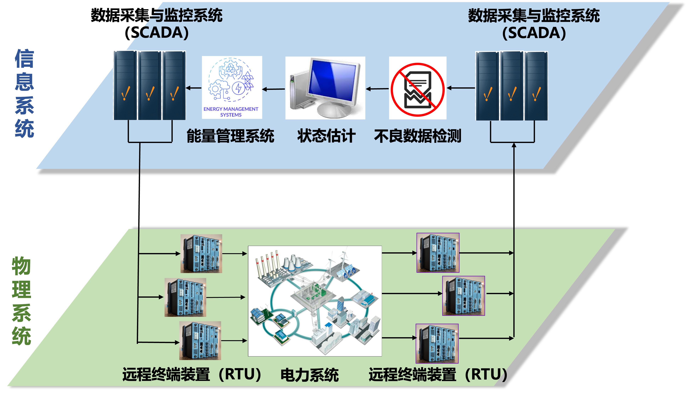

|
孙轲 | 上海大学 | 研究方向
信息物理系统网络安全
信息物理系统（Cyber-Physical System，CPS）是通过计算单元（信息系统）与物理过程（物理系统）深度融合形成的工程化系统，其通过计算机算法实现对物理过程的监测与控制，并构成闭环反馈。典型案例如下图所示的智能电网。尽管这种跨域的深度融合显著提升了运行效率与可用性，但也催生了新型网络威胁与持续演进的攻击态势。

在信息物理系统环境中，攻击者隐蔽行动而防御者暴露运作的非对称性被急剧放大。攻击者不仅可通过长期隐蔽渗透利用常规漏洞，更能获取工业通信协议、控制逻辑等高度系统化的专业知识，从而具备发起精确物理破坏性攻击的能力。与此同时，防御方往往对攻击者已掌握多少关键系统知识缺乏清晰认知。这种深刻的认知劣势迫使防御策略陷入被动反应的高度弱势地位。
为应对这种失衡态势，必须从被动防护转向主动韧性建设。这一转变需要构建真实攻击模型、模拟对抗行为、推演潜在未知攻击向量，并制定相应的针对性防御措施。
代表性论文:
K. Sun*, I. Esnaola, A. M. Tulino and H. V. Poor, ‘‘Asymptotic learning requirements for stealth attacks on linearized state estimation,’’ IEEE Trans. Smart Grid, vol. 14, no. 4, pp. 3189 - 3200, Jul. 2023.
K. Sun and Z. Li*, ‘‘Sparse data injection attacks on smart grid: An information-theoretic approach,’’ IEEE Sensors Journal, vol. 22, no. 14, pp. 14553 - 14562, Jul. 2022.
K. Sun*, I. Esnaola, S. M. Perlaza, and H. V. Poor, ‘‘Stealth attacks on the smart grid,’’ IEEE Trans. Smart Grid, vol. 11 , no. 2, pp. 1276-1285, Mar. 2020.
信息域与物理域组件的深度融合，意味着源自网络空间的威胁可直接转化为物理世界的可感知的实体后果。信息物理系统的核心在于实现以信息驱动的控制，其中对信息流的篡改、欺骗或破坏可能通过控制器与执行器传播，最终改变现实系统的运行状态。这种跨域传导使得看似常规的网络入侵可能升级为设备故障、大规模运行中断乃至重大安全事故。
为此，亟需开展一体化的、可量化的风险评估，统筹考量网络安全漏洞与物理影响之间的关联。
代表性论文:
C. Deng, Y. Li, Q. Liu*, X. Zheng, K. Sun*, Quantitative Risk Assessment for Autonomous Vehicles: Integrating Functional Resonance Analysis Method and Bayesian Network,’’ Quality and Reliability Engineering International, vol. 41, no. 3. pp.970 - 991, Apr. 2025.
Q. Liu, K. Sun, W. Liu, Y. Li*, X. Zheng, C. Cao, J. Li. and W. Tao, ‘‘Quantitative risk assessment for connected automated vehicles: Integrating improved STPA-SafeSec and Bayesian network,’’ Reliability Engineering & System Safety, vol. 253, pp.110528, Jan. 2025.
Y. Li, C. Huang, Q. Liu, X. Zheng, and K. Sun*, ‘‘Integrating security in hazard analysis using STPA-Sec and GSPN: A case study of automatic emergency braking system,’’ Computers & Security, vol. 142, pp. 103890, Jul. 2024.
人工智能安全（新开研究方向）
|